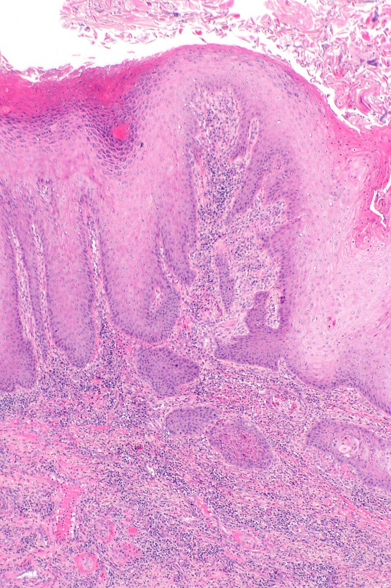

Información divulgativa. No sustituye la valoración de tu equipo médico ni sirve para decidir un tratamiento.


En resumen
| Frecuencia | Menos de 1 caso por 100.000 hombres en Europa; hasta 10 veces más en Brasil, Uganda o India |
| Tipo | Carcinoma epidermoide (95 %) |
| Factores de riesgo | VPH, fimosis, mala higiene, tabaco, liquen escleroso, VIH |
| Señal | Lesión, úlcera, mancha o bulto en el glande o el prepucio que no cura |
| Tratamiento | Cirugía conservadora, ganglio centinela dinámico, quimioterapia |
Prevención
- Vacuna del VPH en chicos.
- La circuncisión en la infancia reduce el riesgo; tratar la fimosis.
- Higiene, no fumar.
Síntomas y diagnóstico
Cualquier lesión que no cure en cuatro semanas en el pene (úlcera, verruga, cambio de color, engrosamiento, secreción maloliente bajo el prepucio) debe valorarse por un urólogo. Muchos hombres consultan tarde por vergüenza. Se diagnostica con biopsia, y se estudian los ganglios inguinales con exploración, ecografía y biopsia del ganglio centinela dinámico.
Tratamiento
- Lesiones precursoras (neoplasia intraepitelial): cremas (imiquimod, 5-FU), láser o cirugía.
- Cirugía conservadora del órgano: escisión local, glandectomía con reconstrucción, cuando es posible, con buenos resultados funcionales y estéticos.
- Penectomía parcial o total en tumores grandes.
- Ganglios inguinales: ganglio centinela dinámico o linfadenectomía; quimioterapia con paclitaxel, ifosfamida y cisplatino (TIP) antes de la cirugía si hay ganglios grandes.
- Enfermedad avanzada: quimioterapia; inmunoterapia en investigación (ensayo internacional InPACT).
Pronóstico
Supervivencia superior al 85 % sin afectación de ganglios; la afectación ganglionar es el factor más importante. Conviene tratarse en centros de referencia por su rareza.
Ver también: Cáncer de ano, Vacunas y cáncer.
Historia · Medicapedia
Cáncer de pene en la historia de la medicina
Cómo se descubrió, quién lo investigó y cómo cambió su tratamiento a lo largo de los siglos, contado en Medicapedia, nuestra web hermana de historia de la medicina.
Leer la historia en Medicapedia ↗Fuentes
- Brouwer OR, et al. European Association of Urology-American Society of Clinical Oncology Collaborative Guideline on Penile Cancer: 2023 Update. Eur Urol. 2023;83:548-560.
- NCI. Tratamiento del cáncer de pene (PDQ). cancer.gov/espanol/tipos/pene